|
.
| Mysteres
de Perfect Dark : Lucerne Tower |
| La
Ville de la Cinématique |
|
| Mysteres
de Perfect Dark : Lucerne Tower |
| La
Ville de la Cinématique |
Avec
le Moon-Jump, continuez tout droit à partir de là où
vous commencez. Dès que vous tombez du rebord de l'Héliport,
volez à travers le Double D de Datadyne (passez au-dessus sinon).
Continuez tout droit, vous serez alors bien loin de l'Immeuble, et vous
passerez à travers l'Immeuble en face. Normalement, vous ne verrez
rien si vous allez tout droit. |
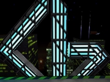


Retournez-vous
(vous avez une bien belle vue de l'Immeuble Datadyne) pour contempler
la Lune, et tout en continuant à voler et à reculer, tout
ça va disparaitre, et sur votre gauche, vous verrez des Batiments,
comme la Première Photo ci-dessous. La Lune sera toujours là.
Retournez-vous, tournez le dos à l'Immeuble Datadyne qui a maintenant
disparu, et voilà, vous êtes dans la Ville que l'on voit
dans la Cinématique ! |


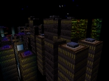
Photos
ci-dessus : Des Batiments Rudimentaires, un peu Carrés et Ternes.
Il y a mieux après. |
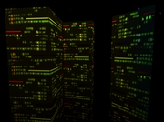
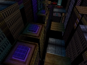
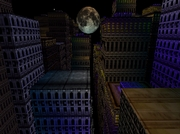
On
continue en volant comme Superman, et on arrive aux endroits intéressants
! Ci-dessous, la Femme Hologramme avec écrit dessous "Last
Battle" en Japonais. Ensuite, juste à coté, la Station
de Taxis ! Enfin, si vous allez plus loin, on passe au travers d'un
Immense Immeuble comme dans un couloir. |
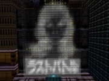


Dans
l'Immeuble que l'on travers, il y a une Grille Rouge, que l'on voit
sur l'image ci-dessous. C'est la seule chose solide de cette Partie
du Niveau. Vous pouvez vous poser dessus et regarder autour de vous.
Je me demande bien pourquoi cet endroit est solide alors qu'on peut
passer au travers tout le reste de la Zone ! |


Enfin,
pour le Plaisir des Yeux, pleins d'autres images de la Ville de la Cinématique
! Lumières, Ecritures et Radars Géants ! Notez l'Horloge
[ Anal Land - 11 - 10 - 129 ] ! De bien belles images accessibles avec
le Moon-Jump ! Youpi ! |
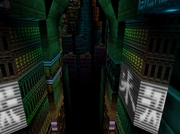
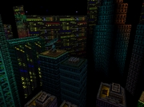
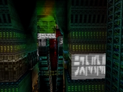


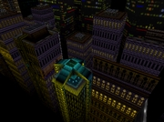

| Le
Conduit d'Aeration + Fromage |
Le
Conduit à coté de l'Ordinateur où il faut poser la
Mine ECM. Si vous le scannez, vous verrez qu'on peut le détruire
et tomber dedans. Trouvez quelque chose qui explose, et faites un beau
trou, puis descendez à l'echelle ! |
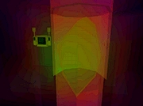


Vous
arrivez dans une Salle avec 3 Fenetres Grilles. Dans l'une d'elle, il
y a le Fromage du Niveau. Si vous scannez le Mur où il n'y a pas
de Fenetre Grille, vous verrez qu'on dirait qu'on peut l'exploser. |
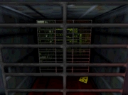 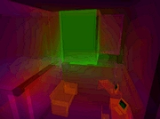
On
arrive dans le Bureau de Cassandra ! Vous noterez que les Deux Personnages
ne bougent pas. Pour qu'ils bougent, il faut ouvrir la Porte (comme dans
l'Objectif quoi) pour que se lance le Speech de Cassandra. |
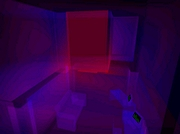 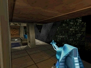
| Les
Mini-Boites de Munitions |
Vous
n'avez besoin de rien de particulier pour découvrir ce petit
détail rigolo. Lorsque vous ramassez ces Boites Minuscules, elles
donnent de la Munition pour votre Falcon. La Première Boite est
facile. Passez devant la Porte du Bureau de Cassandra de Vries, descendez
l'escalier, arretez-vous, regardez en dessous, et voilà ! |
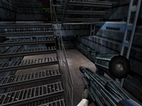

Passez
la Porte, vous etes dans un Couloir, avec les Deux Ascensceurs sur votre
droite. Ouvrez la Première Porte devant vous, et regardez près
de l'Ordinateur du Garde, voici ce que vous devriez apercevoir. Une Mini-Boite
! |
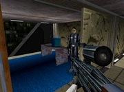 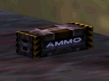
Vous
êtes dans le Couloir. Allez à la Porte tout au fond à
gauche. Entrez dans le Bureau, et hop, une Mini-Boite en plus ! |
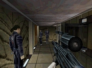 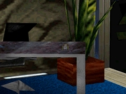 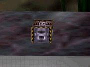
Enfin,
lorsque vous trouverez le Bureau du Garde qui a le Vertige. Observez son Bureau, voilà la Dernière Boite ! |
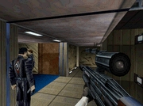 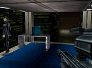
| Passer
à Travers la Porte Principale |
Avec
le Code Passe-Muraille, vous pouvez vous promener dans la Rue, tandis
que les Gardes ne peuvent pas vous suivre. Rien d'interessant dehors,
c'est juste rigolo. Attention, n'allez pas trop loin, sinon vous tombez
dans le Vide !!! |


| Grille
d'Aeration |
Dans
la Salle juste avant l'Isotrope, il y a une Grille super voyante, qu'on
ne peut pas ouvrir. Et bien en fait, elle mène à la Salle
où le Garde s'entraine avec le K7 Avenger. Rien de bien spécial. |


| Petites
Plaques et Ecriture Bizarre |
Ensuite
dirigez-vous vers le fond du Labo, là où il y a les Grilles
avec pleins de Tuyaux dessous. Avec le Farsight ou le Sniper, vous devriez
voir quelques trucs droles. Tout d'abord, ci-dessous, des sortes de
taches bizarres, ou des pièces de Monnaie, je sais pas. On les
voit mieux sur la Troisème Photo, avec le Farsight. |


Plus
interessant, regardez à l'autre extremité de cette même
Plaque. Vous devriez voir un Truc encore plus bizarre, comme une écriture...
Rb ou R6 ? Aucune idée de ce que ça vient faire là. |
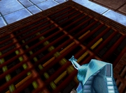
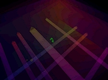
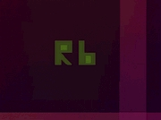
| Datadyne
Extraction - Passe-Muraille
|
Dès
le Début, scannez le Mur sur votre Droite, vous verrez un truc
bizarre, des Gens ! Contournez et tuez tous les Gardes, et vous arriverez
à une Porte Fermée. On peut l'ouvrir avec la Carte de Bureau
de Cassandra de Vries. Dans cette Salle, il y a 2 Gardes du Corps de Cassandra,
Mr Blonde, et 2 Boites de Roquettes. |
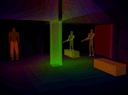 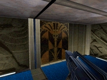
Avec
le Code Passe-Muraille, on les voit encore mieux ! Ils sont figés,
et ne réagissent pas si vous leur tirez dessus (bien qu'ils bougent
quand même et saignent). Ces personnages sont en fait ceux que l'on
voit dans la Ciénmatique de Fin. Comme dans tous les Niveaux, le
jeu stocke les Personnage des Cinématiques dans un autre endroit
(souvent inaccessible), pour ensuite les utiliser dans les Cinématiques. |
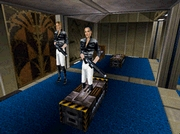 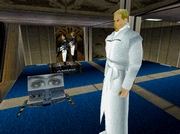
Rare a planqué les 2 Boites de Roquettes
pour plus de difficulté
contre l'Helicoptere.
La
Preuve, si vous blessez les Personnages ils seront pleins de sang dans
la Cinématiques! On trouve ce genre de phénomène
dans d'autres Niveaux, comme la Zone 51 ou le Vaisseau Skedar. Lorsque
vous devez tuer les Gardes du Corps de Cassandra, laissez la dernière
en vie, montez sur le Toit, et vous verrez Cassandra dans la même
position, figée. Tuez le Dernier Garde du Corps, redescendez, et
vous trouverez Mr Blonde, les 2 Gardes du Corps... Et Cassandra de Vries
! Notez que l'un des Gardes du Corps a les pieds "dans " la
Boite de Roquettes ! |
| Datadyne
Extraction - Ordinateurs Posés au Sol
|
Dès
que vous sortez de l'Ascenseur en haut, allez à droite et regardez
avec vos Rayons X ce qui se passe dans la Salle Fermée, juste
en face du 2eme Ascenseur. Vous verrez une Chaise, un Ordinateur, mais
pas de Bureau ! L'Ordinateur est juste posé à meme le
sol. |


Allez
ensuite un Etage au-dessus puis faites un tour vers le fond du niveau,
comme sur la Photo. Regardez derriere le mur et vous verrez 2 autres
Ordinateurs posés sur le sol ! On peut les détruire avec
le Farsight. Mais on ne peut absolumenent pas ouvrir les 2 Portes renfermant
ces Ordinateurs, MEME avec la Carte de Bureau de Cassandra de Vries.
|
| La
Carte de Bureau de Cassandra de Vries
|
Si
vous etes rapide et arrivez aux étages sans trop de dégats, il
se peut qu'un Garde laisse tomber une Carte. C'est la Fameuse
Carte en Question. Avec elle, vous pourrez ouvrir le Bureau de Cassandra
de Vries évidemment, mais aussi ouvrir les 2 Portes au Rez-de-Chaussée
!! Ce sera toujours le meme Garde qui aura la Carte. Voilà à
quoi il ressemble (Deuxième Photo). |

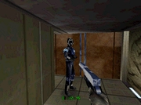
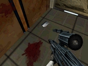
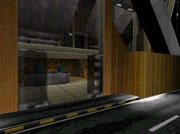
Si
vous êtes trop lent, il ne sera pas là. Si vous vous battez
contre lui, et que le Compteur arrive à Zéro, il disparait
! Avec cette Carte, vous pouvez faire
3 Trucs rigolos. Le Premier, c'est sortir dans la rue en ouvrant la
Porte Principale du Building Datadyne. Ouvrez simplement la Porte, et
à vous la liberté. Attention cependant, car si vous restez
plus de 3 ou 4 secondes dehors, vous tomberez "à travers"
le Sol et mourrez, comme dans Datadyne Defection. |
| Bureau
de Cassandra de Vries |
Allez
au Bureau de Cassandra, et vous trouverez une Grenade sur le bureau.
Prenez-la et faites la peter contre le mur comme sur la photo. Vous
accederez à la Salle Secrete du Fromage et trouverez par terre
un Dragon ! |
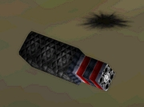 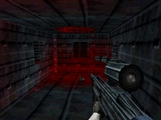

Note - Dans Datadyne Defection, il n'y a pas
de Dragon.


| Datadyne
Defection ou Extraction - Etages Cachés |
Avec
le Moon-Jump, allez juste avant le Bureau de Cassandra de Vries, et passez
à travers la Porte (Code Passe-Muraille) pour vous laissez tomber
le long des Etages. Vous pouvez à tout moment décider de
vous rattraper ! |
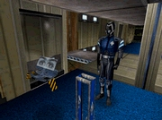
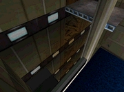
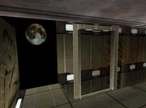
Il
n'y a rien d'interessant comme vous pouvez le voir. C'est juste du très
beau remplissage histoire de donner un aspect fini au Niveau. On trouve
quand même un Etage sur 2 des Portes sympathiques, jugez plutôt
! Vous pouvez aussi vous laissez tomber dans la Cage d'Ascensceur pour
aller plus vite, c'est radical ! |
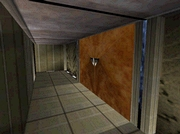

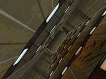